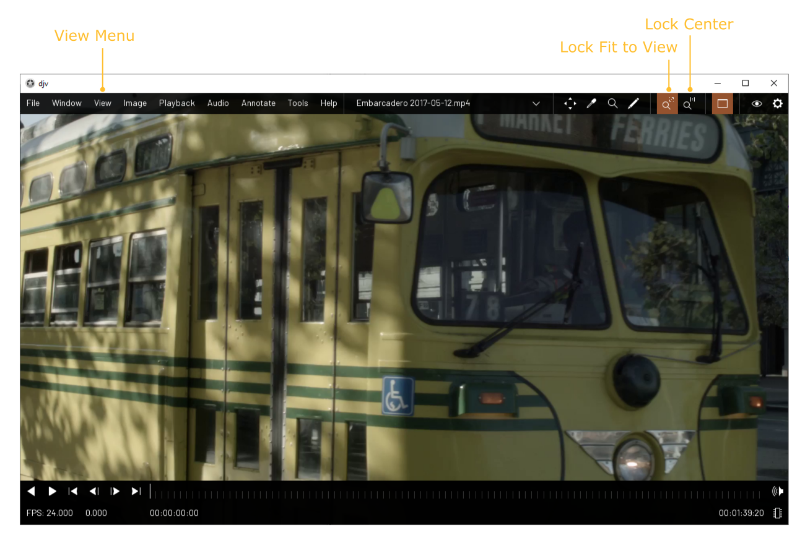
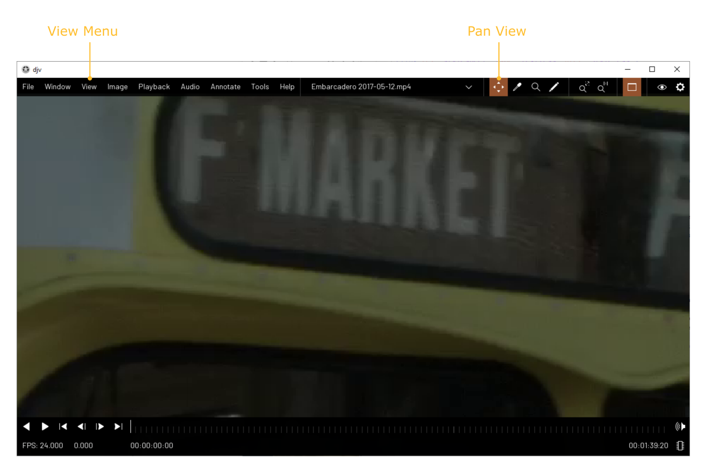

Home | Documentation | Image View
Locking the Image View
You can lock the image view so that it
will always display the image resized to the window, or lock it so that the image is always
centered with the zoom set to 1:1. You can set which options to use with the menu items
"View/Lock Fit to Image" and "View/Lock Center", or use the buttons on the menu bar.

Panning and Zooming
You can pan the image by activating the
"Pan View" tool using the menu item "Tools/Pan View", or using the button on the menu bar.
Once the tool is activated click and drag within the view to pan. If the view is locked
it will automatically be unlocked. To zoom in or out use the menu items "View/Zoom In"
and "View/Zoom Out".
